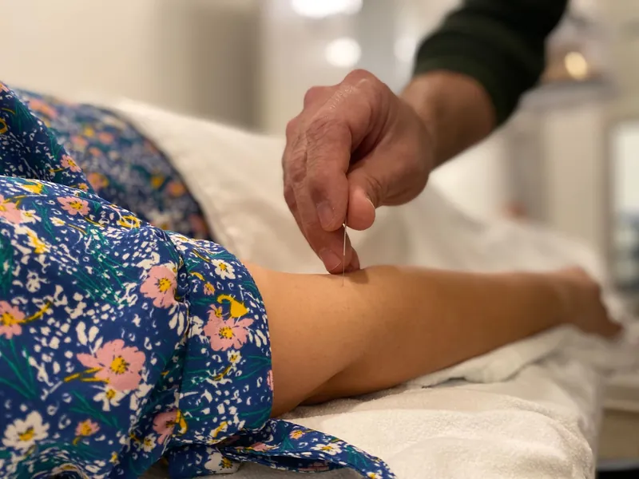
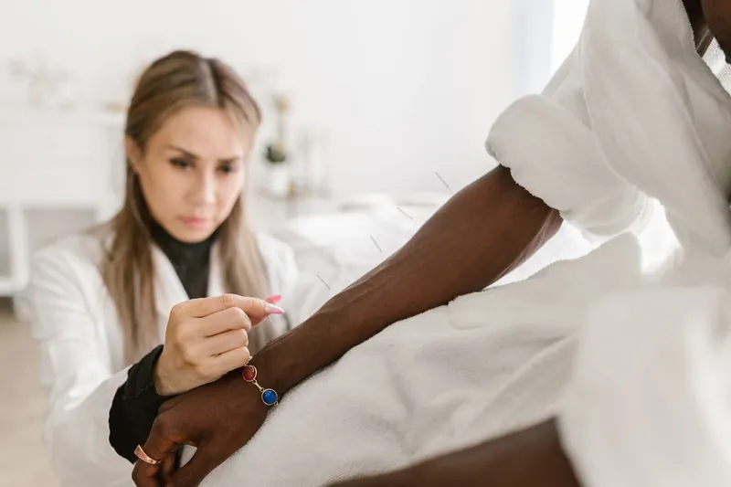
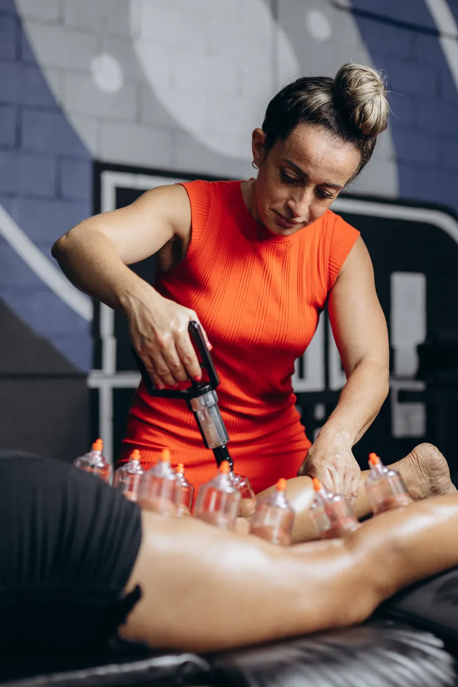
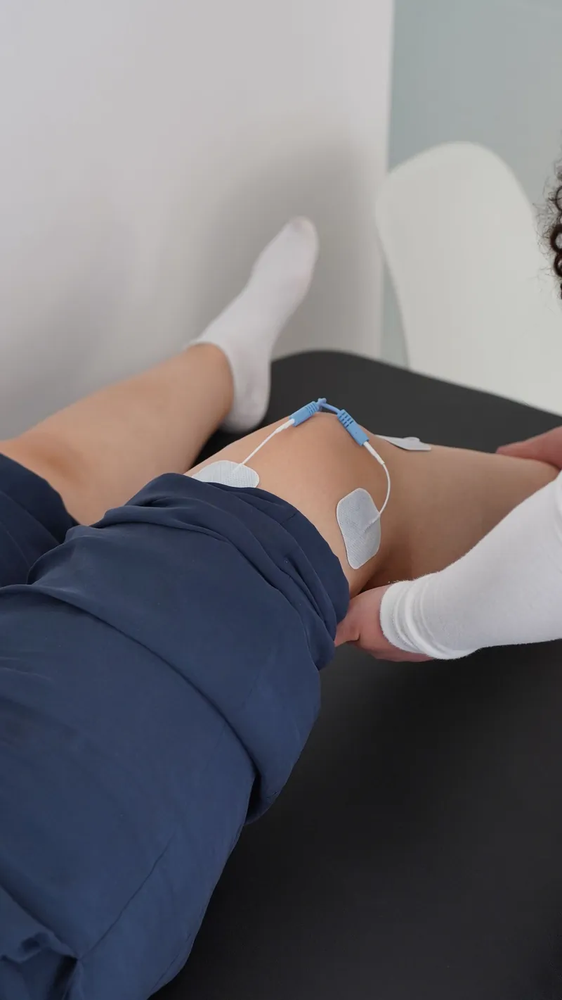
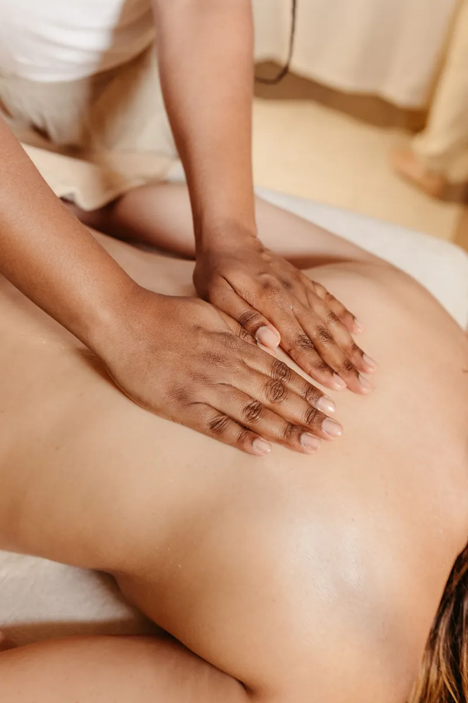
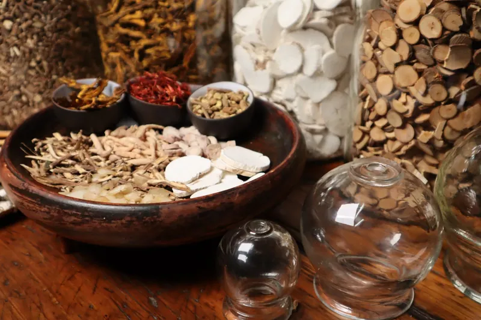
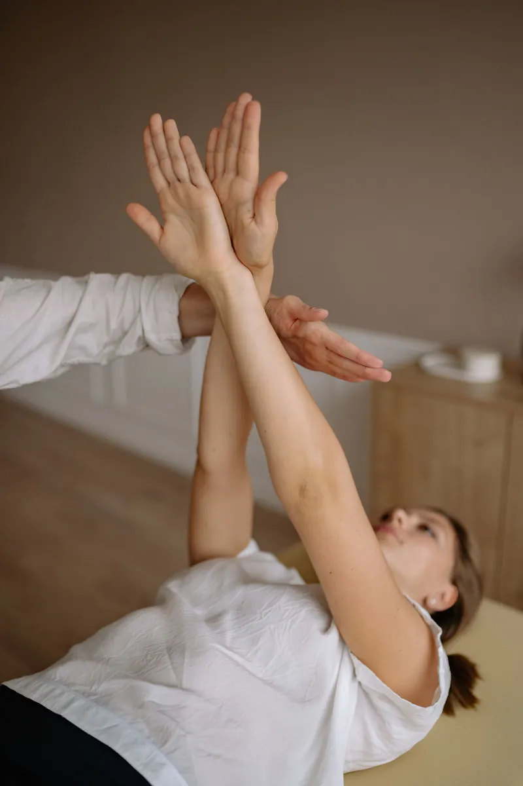
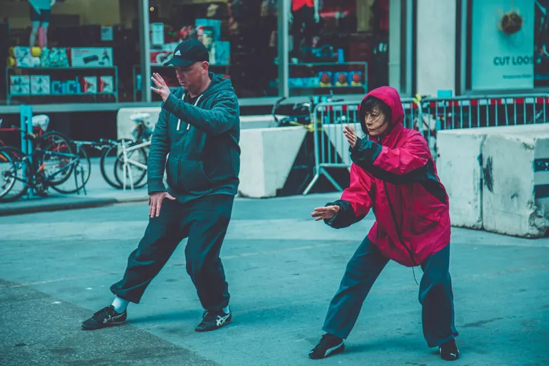
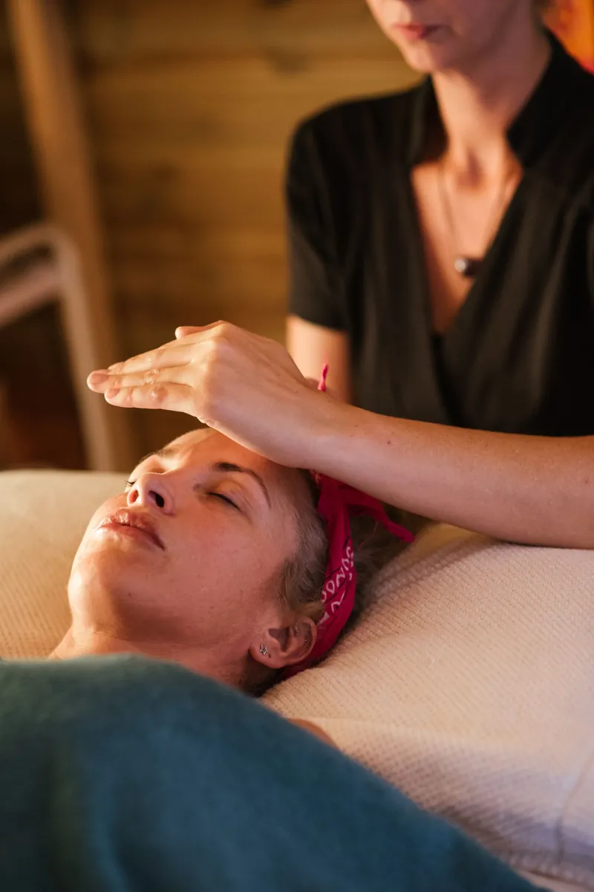
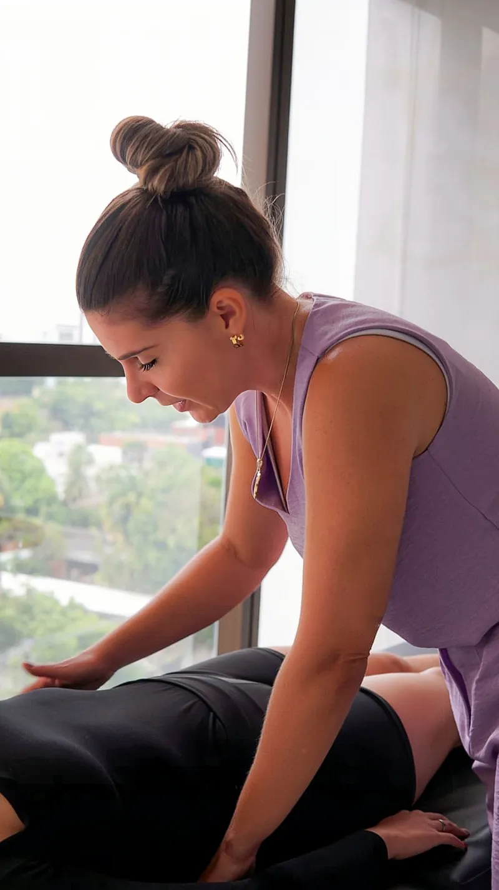

Acupuncture
Initial consultations and follow-up visits using local and distal methods — for pain, stress, headaches, sleep and general wellbeing.

Boise, Idaho · 1433 N Cole Rd
Acupuncture, cupping, electroacupuncture, tui na and herbal medicine — one-to-one treatment for pain, stress, headaches, sleep and movement, in a calm clinic on Boise's west side.
Patient and experience figures as stated by the clinic.
The clinic
People find Treasure Valley Acupuncture in all sorts of states: a back that has hurt for years, an ankle that never quite healed, sleep that will not come, or a body worn down by stress. What they describe afterwards is strikingly consistent — practitioners who explain everything, treatment that feels gentle, and a clinic that feels welcoming from the front desk onwards.
Care here is not a routine applied to everyone. It starts with a conversation about your history and what you hope changes, and the treatment follows from that — local and distal acupuncture methods, cupping and gua sha, electroacupuncture, tui na, and herbal medicine where they fit.
Back, ankle and knee pain are among the most common reasons people first visit.
Treatments
Every plan is shaped around you. Prices on request.

Initial consultations and follow-up visits using local and distal methods — for pain, stress, headaches, sleep and general wellbeing.

Traditional cupping and gua sha for tight, guarded muscles and stubborn tension that will not release on its own.

Targeted treatment to restore muscle function and rehabilitate injured tissue, for acute and chronic pain and injury recovery.

Chinese medical massage, used alongside needling to work through tension and help the body move more freely.

Chinese herbal support prescribed between visits, to keep progress going after you leave the treatment room.

For backs, ankles and bodies getting back to walking, training, gardening and keeping up with family.

Simple Chinese health exercises and self-massage to practise between treatments, so recovery does not stop at the clinic door.

Start with a conversation
Not sure acupuncture is right for you? Call first. You will talk through what is going on, hear honestly whether the clinic has worked with conditions like yours, and get a recommendation either way — even if that recommendation points elsewhere.
No pressure, no obligation. If it feels like a good fit, you schedule a full assessment with a practitioner.
Your visit
Start with the free phone consultation, or email us and tell us briefly what is going on.
Your practitioner takes a detailed history, asks about your concerns, and explains what treatment could look like.
Gentle, focused treatment in a calm room. Patients consistently describe feeling comfortable and well looked after throughout.
Clear guidance on what comes next — how often to return, plus exercises or herbal support to practise at home.

Why patients choose us
Practitioners who meet you where you are, explain everything before they begin, and adjust to what you need on the day.
Patients with long-standing back and muscle pain describe finding relief here after other approaches had not helped.
A welcoming front desk, a calm room, and practitioners who put nervous first-timers at ease.
People arrive for one problem — an ankle, a back — and find the rest of their wellbeing improving too: sleep, balance, energy.
Built from the themes patients raise most in public reviews. No individual review is quoted here.
Inside the clinic
A beautiful, comfortable space where treatment happens slowly and properly. Select any photo to view it larger.
Find us
Phone: (208) 994-4889
Email: info@treasurevalleyacupuncture.com
| Monday – Friday | 9:00 AM – 5:30 PM |
|---|---|
| Saturday | Closed |
| Sunday | Closed |
Questions
A conversation first, then gentle treatment. Patients who arrived nervous consistently say they felt comfortable, well-explained-to, and pleasantly surprised by how little they felt.
The needles are very fine. Most patients feel little or nothing on insertion — some feel a brief, mild ache as the needle reaches depth. Tell your practitioner at any point and they will adjust.
No. Start with the free phone consultation, or email us and tell us what is going on. New clients usually begin with an initial consultation and treatment.
Email us or call (208) 994-4889 and we will confirm current pricing before you book.
Coverage varies by plan. Contact the clinic and staff can help you check your benefits for specific services.
1433 N Cole Rd, Boise, ID 83704. Monday to Friday, 9:00 AM to 5:30 PM; closed Saturday and Sunday.
Book
Tell us what is going on and when suits you. We reply by email to confirm your consultation — or skip the form and call us directly.